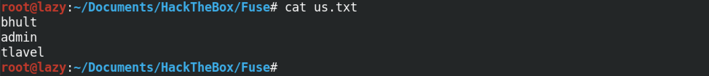

June 25, 2021
Brute Force Windows Server SMB Credentials with Metasploit
In this tutorial we will see how to bruteforce SMB credentials using a username and password list. This can help us identify users that use common passwords which would make our organization vulnerable to attacks.
Running an nmap scan on the target shows the open ports. We can see that SMB (TCP port 445) is open and that the target is running Windows Server 2016.

This is our user list.
And this is our password list.
We will be using the auxiliary/scanner/smb/smb_login module to brute force the SMB credentials. The show info command displays some information about the module including the options that we can use within this module. Note that some of these options already have default values.
The show missing command shows the options that are required for us to run this module. In this case, we are required to at least set the remote host or the target box's IP address.
The set RHOSTS 10.10.10.193 set the target machine, the set RPORT 445 sets the target port which is SMB, the set USER_FILE ./us.txt sets the user list and the set PASS_FILE ./pw.txt sets the password list.
Running show options shows us all the options that we have set. We can see the target's IP address and port, the user list and also the password list. Note that instead of setting a user list or a password list we could also set a single user or a single password by using the SMBUser and SMBPass commands.
run runs the module. We can see that it found a couple of credentials that works on this box.
You can follow me on Twitter 0xmaCyberSec.
- Escalate a Regular Shell to Meterpreter Shell
- Reading Outlook Files in Terminal
- Escalating Privileges with Metasploit's Local Exploit Suggester
- Simple wget PowerShell Script
- PsExec in Linux
- Eternal Blue Exploitation with Metasploit
- Exploit EternalBlue with Custom Exploit - 1
- Exploit EternalBlue with Custom Exploit - 2
- Local Privilege Escalation on Linux Kernel < 4.4.0-116
- Extract Passwords from Firefox Profile
- Escalate Privileges via pip
- Escalate Privileges by Modifying the /etc/passwd File
- wp_admin_shell_upload
- Extract Passwords with LaZagne
- Bruteforce Windows Server SMB Credentials with Medusa
- Brute Force Windows Server SMB Credentials with Hydra
- Brute Force Windows Server SMB Credentials with NCrack
- Brute Force Windows Server SMB Credentials with CrackMapExec
- Brute Force Windows Server SMB Credentials with Metasploit
- Exploit PrintNightmare